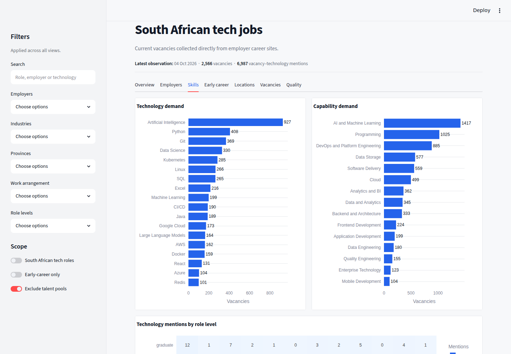
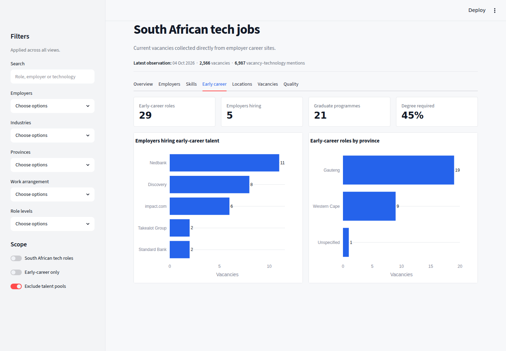

An end-to-end analytics engineering pipeline that collects public technology vacancies directly from employer
career websites, then standardises, enriches and classifies them for labour-market analysis. Deterministic,
explainable rules come first, with machine learning and Gemini as separate, optional suggestion layers.
Ten recruitment-platform adapters, collected from employer career portals rather than job boards
Output
Schema-controlled Parquet datasets with three data-quality reports
Status
Core pipeline operational · live dashboard
The dashboard
Interactive views over the validated data marts.
Seven views behind shared filters. These screenshots show every collected vacancy, with the “South African tech roles” scope switched off.
OverviewVacancy volume, employers, early-career roles, activity over time and the role-level mix.

SkillsTechnology demand and capability demand across the filtered vacancies.

Early careerGraduate, internship and junior opportunities as a dedicated lens.
The question
What is the South African technology market hiring for, and what does it mean for early-career candidates?
The project analyses hiring trends, in-demand skills, programming languages and frameworks, cloud platforms and tools,
career levels, employment types, technical domains, geography and early-career opportunities.
Instead of relying mainly on traditional job boards, it collects vacancies from employer career portals. That gives an
employer-direct view of the market and reduces duplicate observations through conservative deduplication.
🎯
A scope decision, made from evidence.
An early build with five employers produced 72 South African jobs but only 2 explicitly early-career technology roles, because most
open roles were senior or did not state a level. The project was widened to the whole South African technology market, with
graduate, internship and junior roles kept as a dedicated early-career lens. Two flags, is_target_market and
is_early_career, keep the broad market and the small early-career sample from being confused.
Pipeline
From employer career sites to analysis-ready data.
Dedicated adapters handle Greenhouse, Lever, Workday, SAP SuccessFactors, Oracle HCM, WordPress Job Manager, Workable,
Breezy HR, SmartRecruiters and Ashby. Each copes with its own API shape, pagination, detail endpoints, location formats and
failure behaviour, and completeness checks reduce the risk of silently truncated datasets.
02 · Preserve
Immutable raw snapshots
Raw JSON or HTML is stored unchanged with source metadata, collection timestamps and SHA-256 hashes. Transformations never edit
it, so cleaning or classification logic can improve without recollecting history.
03 · Standardise
One consistent schema
Descriptions are cleaned of HTML, text and locations are normalised, workplace and employment metadata are standardised, and
missing or ambiguous values are handled explicitly.
04 · Extract
Skills and requirements
A curated taxonomy extracts languages, frameworks, databases, cloud platforms, tools, capabilities and soft skills, normalising
naming variations to one label. Each skill counts once per vacancy and keeps the exact text that triggered it. Requirements are
separated into minimum and preferred, experience, education and technical capability.
05 · Track
Conservative deduplication and history
Stable provider job identifiers are preferred over fuzzy matching, because similar titles can be different vacancies. First-seen
and last-seen dates, observation history and collection evidence are all preserved.
06 · Publish
Parquet as the analytical contract
jobs.parquet is the one-row-per-vacancy source of truth, alongside job_skills and
job_requirements tables that keep their evidence. Validated dashboard marts are checked for job keys and joins before
anything reads them.
Classification, machine learning and AI
Explainable rules first, then optional ML and LLM suggestions.
Vacancies are classified by career level, functional role, technical domain, employment type, workplace type, technology relevance
and early-career suitability. Evidence is retained where possible, so labels stay explainable and are not unsupported black-box
predictions.
Layer 1 · Rules
Scored, explainable classifier
Title-word precedence and numeric experience ranges decide the label. When evidence is weak or conflicts, a value stays
unspecified rather than being guessed. A weak phrase like “no experience required” no longer decides the label on its
own when an explicit 5+ year requirement is also present.
Layer 2 · Machine learning
TF-IDF + logistic regression
A scikit-learn model trained on the rules’ own high-confidence labels suggests a role level for vacancies still
unspecified, with a confidence score. It is evaluated with macro-F1 rather than accuracy, because the labels are
heavily imbalanced.
Layer 3 · LLM
Gemini-assisted suggestions
Gemini suggests role level, workplace type and city for target-market vacancies missing one or more of them. It is the only layer
that addresses workplace type and location, not just seniority. Responses are constrained to a Pydantic schema, with a confidence
and rationale for each field.
Suggestions never overwrite canonical fields. Both optional layers are run manually, write to separate
ml_ and llm_ fields in gitignored, regenerable output, and a Gemini suggestion keeps only the fields that
were actually unresolved for that job. A consistency test checks the two rule-based role-level classifiers agree on a shared
fixture set, so a fix to one cannot silently drift from the other.
A systematic audit against real data
Every regex-based classifier was verified against the live dataset. The audit confirmed and fixed six bugs, including title-word
precedence and a skills-extraction false positive that affected about 10% of the dataset, and each fix was re-checked against the real
postings that exposed it.
Interactive dashboard
A live Streamlit dashboard that only reads the final contract.
The dashboard does not collect, clean, classify or enrich anything. It reads only the validated Parquet marts, and every global filter
runs as a parameterised DuckDB query, with SQL identifiers chosen from fixed allowlists.
Filters: search term, employer, industry, province, work arrangement, role level, target-market only, early-career only and talent-pool exclusion.
Product decisions
Scope, trade-offs and boundaries, written down.
The project records its scope decision, including what it costs, and how those risks are handled.
Benefits of the wider scope
Useful company, city, seniority and workplace analysis immediately.
Skills and requirements comparable across career stages.
Low early-career availability becomes a measurable finding, not a product failure.
Less dependence on graduate-programme recruitment seasons.
Costs and risks, and the mitigation
Senior roles can dominate aggregate skill counts unless analysis is segmented.
Findings represent supported employers, not the whole market.
The early-career sample is small, so explicit filters, sample-size warnings and source-coverage reporting are used.
In scope
South African, technology-related roles
Public employer career pages and supported public ATS endpoints
Explainable, deterministic classifications
Aggregate market analysis
Out of scope
Salary prediction and résumé matching
Application automation
Protected-attribute inference
Unrestricted scraping of every job platform
The research question was revised with the scope, so the product answers something useful even when graduate programmes are closed.
Design decisions
Principles the pipeline is built on.
Raw data remains immutable
Reproducible and auditable. Logic can improve without recollecting history.
Unknown is better than guessing
Missing or ambiguous values stay unknown rather than creating false precision to raise classification coverage.
No early destructive filtering
Technology relevance and early-career suitability are analytical flags, not reasons to delete records.
Provider logic is isolated
A change to one recruitment platform does not affect the rest of the pipeline, and new platforms can be added without rewriting it.
Provider reliability and testing
Recent work covers SuccessFactors retries, resilient Workday pagination, Oracle HCM detail retrieval and fallbacks for WordPress career portals, backed by automated tests for provider failures and incomplete responses.
Limits and responsible use
Honest about coverage.
The dataset covers vacancies from the configured employer portals and is not a census of every technology vacancy in South Africa.
Coverage depends on the employers included, public availability, platform reliability, collection dates and the accuracy of
rule-based extraction.
It collects only publicly advertised vacancy information. It does not submit applications, collect applicant data, access
authenticated accounts, bypass access controls or infer protected personal attributes.
What this project demonstrates
Analytics engineering, applied ML and careful LLM integration.
API integration across ten platforms, schema design, data-quality validation, retry and fallback strategies, information extraction,
automated testing, an interactive dashboard, applied machine learning with macro-F1 evaluation on imbalanced classes, structured-output LLM integration, and
systematic correctness auditing against real data.